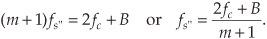

2 Periodic Sampling
Periodic sampling, the process of representing a continuous signal with a sequence of discrete data values, pervades the field of digital signal processing. In practice, sampling is performed by applying a continuous signal to an analog-to-digital (A/D) converter whose output is a series of digital values. Because sampling theory plays an important role in determining the accuracy and feasibility of any digital signal processing scheme, we need a solid appreciation for the often misunderstood effects of periodic sampling. With regard to sampling, the primary concern is just how fast a given continuous signal must be sampled in order to preserve its information content. We can sample a continuous signal at any sample rate we wish, and we’ll obtain a series of discrete values—but the question is, how well do these values represent the original signal? Let’s learn the answer to that question and, in doing so, explore the various sampling techniques used in digital signal processing.
2.1 Aliasing: Signal Ambiguity in the Frequency Domain
There is a frequency-domain ambiguity associated with discrete-time signal samples that does not exist in the continuous signal world, and we can appreciate the effects of this uncertainty by understanding the sampled nature of discrete data. By way of example, suppose you were given the following sequence of values,
x(0) = 0
x(1) = 0.866
x(2) = 0.866
x(3) = 0
x(4) = −0.866
x(5) = −0.866
x(6) = 0,
and were told that they represent instantaneous values of a time-domain sinewave taken at periodic intervals. Next, you were asked to draw that sinewave. You’d start by plotting the sequence of values shown by the dots in Figure 2-1(a). Next, you’d be likely to draw the sinewave, illustrated by the solid line in Figure 2-1(b), that passes through the points representing the original sequence.
Figure 2-1 Frequency ambiguity: (a) discrete-time sequence of values; (b) two different sinewaves that pass through the points of the discrete sequence.
Another person, however, might draw the sinewave shown by the shaded line in Figure 2-1(b). We see that the original sequence of values could, with equal validity, represent sampled values of both sinewaves. The key issue is that if the data sequence represents periodic samples of a sinewave, we cannot unambiguously determine the frequency of the sinewave from those sample values alone.
Reviewing the mathematical origin of this frequency ambiguity enables us not only to deal with it, but to use it to our advantage. Let’s derive an expression for this frequency-domain ambiguity and, then, look at a few specific examples. Consider the continuous time-domain sinusoidal signal defined as
This x(t) signal is a garden-variety sinewave whose frequency is fo Hz. Now let’s sample x(t) at a rate of fs samples/second, i.e., at regular periods of ts seconds where ts = 1/fs. If we start sampling at time t = 0, we will obtain samples at times 0ts, 1ts, 2ts, and so on. So, from Eq. (2-1), the first n successive samples have the values
Equation (2-2) defines the value of the nth sample of our x(n) sequence to be equal to the original sinewave at the time instant nts. Because two values of a sinewave are identical if they’re separated by an integer multiple of 2π radians, i.e., sin(ø) = sin(ø+2πm) where m is any integer, we can modify Eq. (2-2) as
If we let m be an integer multiple of n, m = kn, we can replace the m/n ratio in Eq. (2-3) with k so that
Because fs = 1/ts, we can equate the x(n) sequences in Eqs. (2-2) and (2-4) as
The fo and (fo+kfs) factors in Eq. (2-5) are therefore equal. The implication of Eq. (2-5) is critical. It means that an x(n) sequence of digital sample values, representing a sinewave of fo Hz, also exactly represents sinewaves at other frequencies, namely, fo + kfs. This is one of the most important relationships in the field of digital signal processing. It’s the thread with which all sampling schemes are woven. In words, Eq. (2-5) states:
When sampling at a rate of fs samples/second, if k is any positive or negative integer, we cannot distinguish between the sampled values of a sinewave of fo Hz and a sinewave of (fo+kfs) Hz.
It’s true. No sequence of values stored in a computer, for example, can unambiguously represent one and only one sinusoid without additional information. This fact applies equally to A/D-converter output samples as well as signal samples generated by computer software routines. The sampled nature of any sequence of discrete values makes that sequence also represent an infinite number of different sinusoids.
Equation (2-5) influences all digital signal processing schemes. It’s the reason that, although we’ve only shown it for sinewaves, we’ll see in Chapter 3 that the spectrum of any discrete series of sampled values contains periodic replications of the original continuous spectrum. The period between these replicated spectra in the frequency domain will always be fs, and the spectral replications repeat all the way from DC to daylight in both directions of the frequency spectrum. That’s because k in Eq. (2-5) can be any positive or negative integer. (In Chapters 5 and 6, we’ll learn that Eq. (2-5) is the reason that all digital filter frequency responses are periodic in the frequency domain and is crucial to analyzing and designing a popular type of digital filter known as the infinite impulse response filter.)
To illustrate the effects of Eq. (2-5), let’s build on Figure 2-1 and consider the sampling of a 7 kHz sinewave at a sample rate of 6 kHz. A new sample is determined every 1/6000 seconds, or once every 167 microseconds, and their values are shown as the dots in Figure 2-2(a).
Figure 2-2 Frequency ambiguity effects of Eq. (2-5): (a) sampling a 7 kHz sinewave at a sample rate of 6 kHz; (b) sampling a 4 kHz sinewave at a sample rate of 6 kHz; (c) spectral relationships showing aliasing of the 7 and 4 kHz sinewaves.
Notice that the sample values would not change at all if, instead, we were sampling a 1 kHz sinewave. In this example fo = 7 kHz, fs = 6 kHz, and k = −1 in Eq. (2-5), such that fo+kfs = [7+(−1·6)] = 1 kHz. Our problem is that no processing scheme can determine if the sequence of sampled values, whose amplitudes are represented by the dots, came from a 7 kHz or a 1 kHz sinusoid. If these amplitude values are applied to a digital process that detects energy at 1 kHz, the detector output would indicate energy at 1 kHz. But we know that there is no 1 kHz tone there—our input is a spectrally pure 7 kHz tone. Equation (2-5) is causing a sinusoid, whose name is 7 kHz, to go by the alias of 1 kHz. Asking someone to determine which sinewave frequency accounts for the sample values in Figure 2-2(a) is like asking, “When I add two numbers I get a sum of four. What are the two numbers?” The answer is that there is an infinite number of number pairs that can add up to four.
Figure 2-2(b) shows another example of frequency ambiguity that we’ll call aliasing, where a 4 kHz sinewave could be mistaken for a −2 kHz sinewave. In Figure 2-2(b), fo = 4 kHz, fs = 6 kHz, and k = −1 in Eq. (2-5), so that fo+kfs = [4+(−1 · 6)] = −2 kHz. Again, if we examine a sequence of numbers representing the dots in Figure 2-2(b), we could not determine if the sampled sinewave was a 4 kHz tone or a −2 kHz tone. (Although the concept of negative frequencies might seem a bit strange, it provides a beautifully consistent methodology for predicting the spectral effects of sampling. Chapter 8 discusses negative frequencies and how they relate to real and complex signals.)
Now, if we restrict our spectral band of interest to the frequency range of ±fs/2, the previous two examples take on a special significance. The frequency fs/2 is an important quantity in sampling theory and is referred to by different names in the literature, such as critical Nyquist, half Nyquist, and folding frequency. A graphical depiction of our two frequency aliasing examples is provided in Figure 2-2(c). We’re interested in signal components that are aliased into the frequency band between −fs/2 and +fs/2. Notice in Figure 2-2(c) that within the spectral band of interest (±3 kHz, because fs = 6 kHz), there is energy at −2 kHz and +1 kHz, aliased from 4 kHz and 7 kHz, respectively. Note also that the vertical positions of the dots in Figure 2-2(c) have no amplitude significance but that their horizontal positions indicate which frequencies are related through aliasing.
A general illustration of aliasing is provided in the shark’s tooth pattern in Figure 2-3(a). Note how the peaks of the pattern are located at integer multiples of fs Hz. The pattern shows how signals residing at the intersection of a horizontal line and a sloped line will be aliased to all of the intersections of that horizontal line and all other lines with like slopes. For example, the pattern in Figure 2-3(b) shows that our sampling of a 7 kHz sinewave at a sample rate of 6 kHz will provide a discrete sequence of numbers whose spectrum ambiguously represents tones at 1 kHz, 7 kHz, 13 kHz, 19 kHz, etc. Let’s pause for a moment and let these very important concepts soak in a bit. Again, discrete sequence representations of a continuous signal have unavoidable ambiguities in their frequency domains. These ambiguities must be taken into account in all practical digital signal processing algorithms.
Figure 2-3 Shark’s tooth pattern: (a) aliasing at multiples of the sampling frequency; (b) aliasing of the 7 kHz sinewave to 1 kHz, 13 kHz, and 19 kHz.
OK, let’s review the effects of sampling signals that are more interesting than just simple sinusoids.
2.2 Sampling Lowpass Signals
Consider the situation of sampling a signal such as a continuous real-valued lowpass x(t) signal whose spectrum is shown in Figure 2-4(a). Notice that the spectrum is symmetrical around zero Hz, and the spectral amplitude is zero above +B Hz and below −B Hz; i.e., the signal is band-limited. (From a practical standpoint, the term band-limited signal merely implies that any signal energy outside the range of ±B Hz is below the sensitivity of our system.) The x(t) time signal is called a lowpass signal because its spectral energy is low in frequency.
Figure 2-4 Spectral replications: (a) original continuous lowpass signal spectrum; (b) spectral replications of the sampled lowpass signal when fs/2 > B; (c) frequency overlap and aliasing when the sampling rate is too low because fs/2 < B.

Pausing for a moment, if the continuous x(t) signal were a voltage on a coax cable applied to the input of an analog spectrum analyzer, we would only see the spectral energy over the positive-frequency range of 0 to +B Hz on the analyzer’s screen. However, in our world of discrete signals (DSP) we show the spectrum of real-valued signals as having both positive- and negative-frequency spectral energy. Throughout this book we’ll repeatedly see why such spectral representations are often useful, and sometimes mandatory in our work. The mathematical justification for two-sided spectral diagrams is provided in both Chapters 3 and 8. For now, we request the reader’s acceptance that Figure 2-4(a) is a valid representation of the spectrum of the continuous x(t) signal.
Given that the continuous x(t) signal, whose spectrum is shown in Figure 2-4(a), is sampled at a rate of fs samples/second, we can see the spectral replication effects of sampling in Figure 2-4(b) showing the original spectrum in addition to an infinite number of replications. The period of spectral replication is fs Hz. Figure 2-4(b) is the spectrum of the sequence of x(n) sampled values of the continuous x(t) signal. (Although we stated in Section 1.1 that frequency-domain representations of discrete time-domain sequences are themselves discrete, the replicated spectra in Figure 2-4(b) are shown as continuous lines, instead of discrete dots, merely to keep the figure from looking too cluttered. We’ll cover the full implications of discrete frequency spectra in Chapter 3.)
Let’s step back a moment and understand Figure 2-4 for all it’s worth. Figure 2-4(a) is the spectrum of a continuous signal, a signal that can only exist in one of two forms. Either it’s a continuous signal that can be sampled, through A/D conversion, or it is merely an abstract concept such as a mathematical expression for a signal. It cannot be represented in a digital machine in its current band-limited form. Once the signal is represented by a sequence of discrete sample values, its spectrum takes the replicated form of Figure 2-4(b).
The replicated spectra are not just figments of the mathematics; they exist and have a profound effect on subsequent digital signal processing.† The replications may appear harmless, and it’s natural to ask, “Why care about spectral replications? We’re only interested in the frequency band within ±fs/2.” Well, if we perform a frequency translation operation or induce a change in sampling rate through decimation or interpolation, the spectral replications will shift up or down right in the middle of the frequency range of interest ±fs/2 and could cause problems[1]. Let’s see how we can control the locations of those spectral replications.
† Toward the end of Section 5.9, as an example of using the convolution theorem, another derivation of periodic sampling’s replicated spectra will be presented.
In practical A/D conversion schemes, fs is always greater than 2B to separate spectral replications at the folding frequencies of ±fs/2. This very important relationship of fs ≥ 2B is known as the Nyquist criterion. To illustrate why the term folding frequency is used, let’s lower our sampling frequency to fs = 1.5B Hz. The spectral result of this undersampling is illustrated in Figure 2-4(c). The spectral replications are now overlapping the original baseband spectrum centered at zero Hz. Limiting our attention to the band ±fs/2 Hz, we see two very interesting effects. First, the lower edge and upper edge of the spectral replications centered at +fs and −fs now lie in our band of interest. This situation is equivalent to the original spectrum folding to the left at +fs/2 and folding to the right at −fs/2. Portions of the spectral replications now combine with the original spectrum, and the result is aliasing errors. The discrete sampled values associated with the spectrum of Figure 2-4(c) no longer truly represent the original input signal. The spectral information in the bands of −B to −B/2 and B/2 to B Hz has been corrupted. We show the amplitude of the aliased regions in Figure 2-4(c) as shaded lines because we don’t really know what the amplitudes will be if aliasing occurs.
The second effect illustrated by Figure 2-4(c) is that the entire spectral content of the original continuous signal is now residing in the band of interest between −fs/2 and +fs/2. This key property was true in Figure 2-4(b) and will always be true, regardless of the original signal or the sample rate. This effect is particularly important when we’re digitizing (A/D converting) continuous signals. It warns us that any signal energy located above +B Hz and below −B Hz in the original continuous spectrum of Figure 2-4(a) will always end up in the band of interest after sampling, regardless of the sample rate. For this reason, continuous (analog) lowpass filters are necessary in practice.
We illustrate this notion by showing a continuous signal of bandwidth B accompanied by noise energy in Figure 2-5(a). Sampling this composite continuous signal at a rate that’s greater than 2B prevents replications of the signal of interest from overlapping each other, but all of the noise energy still ends up in the range between −fs/2 and +fs/2 of our discrete spectrum shown in Figure 2-5(b). This problem is solved in practice by using an analog lowpass anti-aliasing filter prior to A/D conversion to attenuate any unwanted signal energy above +B and below −B Hz as shown in Figure 2-6. An example lowpass filter response shape is shown as the dotted line superimposed on the original continuous signal spectrum in Figure 2-6. Notice how the output spectrum of the lowpass filter has been band-limited, and spectral aliasing is avoided at the output of the A/D converter.
Figure 2-5 Spectral replications: (a) original continuous signal-plus-noise spectrum; (b) discrete spectrum with noise contaminating the signal of interest.
Figure 2-6 Lowpass analog filtering prior to sampling at a rate of fs Hz.
As a historical note, the notion of periodic sampling was studied by various engineers, scientists, and mathematicians such as the Russian V. Kotelnikov, the Swedish-born H. Nyquist, the Scottish E. Whittaker, and the Japanese I. Someya[2]. But it was the American Claude Shannon, acknowledging the work of others, that formalized the concept of periodic sampling as we know it today and brought it to the broad attention of communications engineers[3]. That was in 1948—the birth year of the transistor, marshmallows, and this author.
This completes the discussion of simple lowpass sampling. Now let’s go on to a more advanced sampling topic that’s proven so useful in practice.
2.3 Sampling Bandpass Signals
Although satisfying the majority of sampling requirements, the sampling of lowpass signals, as in Figure 2-6, is not the only sampling scheme used in practice. We can use a technique known as bandpass sampling to sample a continuous bandpass signal that is centered about some frequency other than zero Hz. When a continuous input signal’s bandwidth and center frequency permit us to do so, bandpass sampling not only reduces the speed requirement of A/D converters below that necessary with traditional lowpass sampling; it also reduces the amount of digital memory necessary to capture a given time interval of a continuous signal.
By way of example, consider sampling the band-limited signal shown in Figure 2-7(a) centered at fc = 20 MHz, with a bandwidth B = 5 MHz. We use the term bandpass sampling for the process of sampling continuous signals whose center frequencies have been translated up from zero Hz. What we’re calling bandpass sampling goes by various other names in the literature, such as IF sampling, harmonic sampling[4], sub-Nyquist sampling, and undersampling[5]. In bandpass sampling, we’re more concerned with a signal’s bandwidth than its highest-frequency component. Note that the negative frequency portion of the signal, centered at −fc, is the mirror image of the positive frequency portion—as it must be for real signals. Our bandpass signal’s highest-frequency component is 22.5 MHz. Conforming to the Nyquist criterion (sampling at twice the highest-frequency content of the signal) implies that the sampling frequency must be a minimum of 45 MHz. Consider the effect if the sample rate is 17.5 MHz shown in Figure 2-7(b). Note that the original spectral components remain located at ±fc, and spectral replications are located exactly at baseband, i.e., butting up against each other at zero Hz. Figure 2-7(b) shows that sampling at 45 MHz was unnecessary to avoid aliasing—instead we’ve used the spectral replicating effects of Eq. (2-5) to our advantage.
Figure 2-7 Bandpass signal sampling: (a) original continuous signal spectrum; (b) sampled signal spectrum replications when sample rate is 17.5 MHz.
Bandpass sampling performs digitization and frequency translation in a single process, often called sampling translation. The processes of sampling and frequency translation are intimately bound together in the world of digital signal processing, and every sampling operation inherently results in spectral replications. The inquisitive reader may ask, “Can we sample at some still lower rate and avoid aliasing?” The answer is yes, but, to find out how, we have to grind through the derivation of an important bandpass sampling relationship. Our reward, however, will be worth the trouble because here’s where bandpass sampling really gets interesting.
Let’s assume we have a continuous input bandpass signal of bandwidth B. Its carrier frequency is fc Hz, i.e., the bandpass signal is centered at fc Hz, and its sampled value spectrum is that shown in Figure 2-8(a). We can sample that continuous signal at a rate, say fs′ Hz, so the spectral replications of the positive and negative bands, Q and P, just butt up against each other exactly at zero Hz. This situation, depicted in Figure 2-8(a), is reminiscent of Figure 2-7(b). With an arbitrary number of replications, say m, in the range of 2fc − B, we see that
Figure 2-8 Bandpass sampling frequency limits: (a) sample rate fs′ = (2fc − B)/6; (b) sample rate is less than fs′; (c) minimum sample rate fs″ < fs′.
In Figure 2-8(a), m = 6 for illustrative purposes only. Of course m can be any positive integer so long as fs′ is never less than 2B. If the sample rate fs′ is increased, the original spectra (bold) do not shift, but all the replications will shift. At zero Hz, the P band will shift to the right, and the Q band will shift to the left. These replications will overlap and aliasing occurs. Thus, from Eq. (2-6), for an arbitrary m, there is a frequency that the sample rate must not exceed, or
If we reduce the sample rate below the fs′ value shown in Figure 2-8(a), the spacing between replications will decrease in the direction of the arrows in Figure 2-8(b). Again, the original spectra do not shift when the sample rate is changed. At some new sample rate fs″, where fs″ < fs′, the replication P′ will just butt up against the positive original spectrum centered at fc as shown in Figure 2-8(c). In this condition, we know that

Should fs″ be decreased in value, P′ will shift further down in frequency and start to overlap with the positive original spectrum at fc and aliasing occurs. Therefore, from Eq. (2-8) and for m+1, there is a frequency that the sample rate must always exceed, or
We can now combine Eqs. (2-7) and (2-9) to say that fs may be chosen anywhere in the range between fs″ and fs′ to avoid aliasing, or

where m is an arbitrary, positive integer ensuring that fs ≥ 2B. (For this type of periodic sampling of real signals, known as real or 1st-order sampling, the Nyquist criterion fs ≥ 2B must still be satisfied.)
To appreciate the important relationships in Eq. (2-10), let’s return to our bandpass signal example, where Eq. (2-10) enables the generation of Table 2-1. This table tells us that our sample rate can be anywhere in the range of 22.5 to 35 MHz, anywhere in the range of 15 to 17.5 MHz, or anywhere in the range of 11.25 to 11.66 MHz. Any sample rate below 11.25 MHz is unacceptable because it will not satisfy Eq. (2-10) as well as fs ≥ 2B. The spectra resulting from several of the sampling rates from Table 2-1 are shown in Figure 2-9 for our bandpass signal example. Notice in Figure 2-9(f) that when fs equals 7.5 MHz (m = 5), we have aliasing problems because neither the greater-than relationships in Eq. (2-10) nor fs ≥ 2B have been satisfied. The m = 4 condition is also unacceptable because fs ≥ 2B is not satisfied. The last column in Table 2-1 gives the optimum sampling frequency for each acceptable m value. Optimum sampling frequency is defined here as that frequency where spectral replications butt up against each other at zero Hz. For example, in the m = 1 range of permissible sampling frequencies, it is much easier to perform subsequent digital filtering or other processing on the signal samples whose spectrum is that of Figure 2-9(b), as opposed to the spectrum in Figure 2-9(a).
Table 2-1 Equation (2-10) Applied to the Bandpass Signal Example
Figure 2-9 Various spectral replications from Table 2-1: (a) fs = 35 MHz; (b) fs = 22.5 MHz; (c) fs = 17.5 MHz; (d) fs = 15 MHz; (e) fs = 11.25 MHz; (f) fs = 7.5 MHz.
2.4 Practical Aspects of Bandpass Sampling
Now that we’re familiar with the theory of bandpass sampling, let’s discuss a few aspects of bandpass sampling in practical applications.
2.4.1 Spectral Inversion in Bandpass Sampling
Some of the permissible fs values from Eq. (2-10) will, although avoiding aliasing problems, provide a sampled baseband spectrum (located near zero Hz) that is inverted from the original analog signal’s positive and negative spectral shapes. That is, the positive-frequency sampled baseband will have the inverted shape of the negative half from the original analog spectrum. This spectral inversion happens whenever m, in Eq. (2-10), is an odd integer, as illustrated in Figures 2-9(c) and 2-9(d). When the original positive spectral bandpass components are symmetrical about the fc frequency, spectral inversion presents no problem and any nonaliasing value for fs from Eq. (2-10) may be chosen.
However, if spectral inversion is something to be avoided, for example, when single sideband signals are being processed, the applicable sample rates to avoid spectral inversion are defined by Eq. (2-10) with the restriction that m is an even integer and fs > 2B is satisfied.
Now here’s some good news. With a little additional digital processing we can sample at rates defined by Eq. (2-10) with odd m, with their spectral inversion, and easily reinvert the spectrum back to its original orientation. The discrete spectrum of any digital signal can be inverted by multiplying the signal’s discrete-time samples by a sequence of alternating plus ones and minus ones (1, −1, 1, −1, etc.), indicated in the literature by the succinct expression (−1)n.
Although multiplying time samples by (−1)n is explored in detail in Section 13.1, all we need to remember at this point is the simple rule that multiplication of real signal samples by (−1)n flips the positive-frequency band of interest, from zero to +fs/2 Hz, where the center of the flipping is fs/4 Hz. Likewise, the multiplication flips the negative frequency band of interest, from −fs/2 to zero Hz, where the center of the flipping is −fs/4 Hz as shown in Figure 2-10. In the literature of DSP, occasionally you’ll see the (−1)n sequence expressed by the equivalent expression cos(πn).
Figure 2-10 Spectral inversion through multiplication by (−1)n: (a) spectrum of original x(n); (b) spectrum of (−1)n · x(n).
2.4.2 Positioning Sampled Spectra at fs/4
In many signal processing applications we’ll find it useful to use an fs bandpass sampling rate that forces the sampled spectra to be centered exactly at ±fs/4 as shown in Figure 2-10(a). As we’ll see in later chapters, this scenario greatly simplifies certain common operations such as digital filtering, complex down-conversion, and Hilbert transformations.
To ensure that sampled spectra reside at ±fs/4, we select fs using
where fc is the center frequency of the original analog signal’s bandpass signal.
2.4.3 Noise in Bandpass-Sampled Signals
We have painted a rosy picture of bandpass sampling, with its analog signal capture capabilities at reduced sample rates. However, there is a negative aspect associated with bandpass sampling. The signal-to-noise ratio (SNR), the ratio of the power of a signal over the total background noise power, of our digitized signal is degraded when we perform bandpass sampling. (A general discussion of SNR is provided in Appendix D.)
Here’s the story. The spectrum of an analog lowpass signal, output from an analog anti-aliasing lowpass filter, is that shown in Figure 2-11(a). That lowpass signal contains some amount of background noise power. Now if an analog bandpass signal is likewise contaminated with background noise, as shown by the spectral plot in Figure 2-11(b), the bandpass-sampled signal will have an increased level of background noise as shown in Figure 2-11(c). That’s because all of the background spectral noise in Figure 2-11(b) must now reside in the range of −fs/2 to fs/2 in Figure 2-11(c). As such, the bandpass-sampled signal’s SNR is reduced (degraded).
Figure 2-11 Sampling SNR degradation: (a) analog lowpass signal spectral power; (b) analog bandpass signal spectral power; (c) bandpass-sampled signal spectral power when m = 1.
As detailed in reference [6], if the analog bandpass signal’s background noise spectral power level is relatively flat, as in Figure 2-11(b), the bandpass-sampled background noise power increases by a factor of m + 1 (the denominator of the right-side ratio in Eq. (2-10)) while the desired signal power P remains unchanged. As such, the bandpass-sampled signal’s SNR, measured in decibels, is reduced by
below the SNR of the original analog signal. So for the Figure 2-11 example, when m = 1, the bandpass-sampled signal’s background noise power doubles, and the total bandpass-sampled signal’s SNR is DSNR = 3 dB less than the analog bandpass signal’s SNR.
The notion of using decibels, a very convenient method of comparing the power of two signals (the two signals, in this case, are our bandpass signal and the background noise signal), is discussed in Appendix E.
References
[1] Crochiere, R., and Rabiner, L. “Optimum FIR Digital Implementations for Decimation, Interpolation, and Narrow-band Filtering,” IEEE Trans. on Acoust. Speech, and Signal Proc., Vol. ASSP-23, No. 5, October 1975.
[2] Luke, H. “The Origins of the Sampling Theorem,” IEEE Communications Magazine, April 1999, pp. 106–109.
[3] Shannon, C. “A Mathematical Theory of Communication,” Bell Sys. Tech. Journal, Vol. 27, 1948, pp. 379–423, 623–656.
[4] Steyskal, H. “Digital Beamforming Antennas,” Microwave Journal, January 1987.
[5] Hill, G. “The Benefits of Undersampling,” Electronic Design, July 11, 1994.
[6] Vaughan, R., et al., “The Theory of Bandpass Sampling,” IEEE Trans. on Signal Processing, Vol. 39, No. 9, September 1991, pp. 1973–1984.
Chapter 2 Problems
2.1 Suppose you have a mechanical clock that has a minute hand, but no hour hand. Next, suppose you took a photograph of the clock when the minute hand was pointed at 12:00 noon and then took additional photos every 55 minutes. Upon showing those photos, in time order, to someone:
(a) What would that person think about the direction of motion of the minute hand as time advances?
(b) With the idea of lowpass sampling in mind, how often would you need to take photos, measured in photos/hour, so that the successive photos show proper (true) clockwise minute-hand rotation?
2.2 Assume we sampled a continuous x(t) signal and obtained 100 x(n) time-domain samples. What important information (parameter that we need to know in order to analyze x(t)) is missing from the x(n) sequence?
2.3 National Instruments Corporation produces an analog-to-digital (A/D) converter (Model #NI-5154) that can sample (digitize) an analog signal at a sample rate of fs = 2.0 GHz (gigahertz).
(a) What is the ts period of the output samples of such a device?
(b) Each A/D output sample is an 8-bit binary word (one byte), and the converter is able to store 256 million samples. What is the maximum time interval over which the converter can continuously sample an analog signal?
2.4 Consider a continuous time-domain sinewave, whose cyclic frequency is 500 Hz, defined by
x(t) = cos[2π(500)t + π/7].
Write the equation for the discrete x(n) sinewave sequence that results from sampling x(t) at an fs sample rate of 4000 Hz.
Note: This problem is not “busy work.” If you ever want to model the x(t) signal using software (MathCAD, MATLAB, Octave, etc.), then it is the desired x(n) equation that you program into your software.
2.5 If we sampled a single continuous sinewave whose frequency is fo Hz, over what range must ts (the time between digital samples) be to satisfy the Nyquist criterion? Express that ts range in terms of fo.
2.6 Suppose we used the following statement to describe the Nyquist criterion for lowpass sampling: “When sampling a single continuous sinusoid (a single analog tone), we must obtain no fewer than N discrete samples per continuous sinewave cycle.” What is the value of this integer N?
2.7 The Nyquist criterion, regarding the sampling of lowpass signals, is sometimes stated as “The sampling rate fs must be equal to, or greater than, twice the highest spectral component of the continuous signal being sampled.” Can you think of how a continuous sinusoidal signal can be sampled in accordance with that Nyquist criterion definition to yield all zero-valued discrete samples?
2.8 Stock market analysts study time-domain charts (plots) of the closing price of stock shares. A typical plot takes the form of that in Figure P2-8, where instead of plotting discrete closing price sample values as dots, they draw straight lines connecting the closing price value samples. What is the ts period for such stock market charts?
2.9 Consider a continuous time-domain sinewave defined by
x(t) = cos(4000πt)
that was sampled to produce the discrete sinewave sequence defined by
x(n) = cos(nπ/2).
What is the fs sample rate, measured in Hz, that would result in sequence x(n)?
2.10 Consider the two continuous signals defined by
a(t) = cos(4000πt) and b(t) = cos(200πt)
whose product yields the x(t) signal shown in Figure P2-10. What is the minimum fs sample rate, measured in Hz, that would result in a sequence x(n) with no aliasing errors (no spectral replication overlap)?

2.11 Consider a discrete time-domain sinewave sequence defined by
x(n) = sin(nπ/4)
that was obtained by sampling an analog x(t) = sin(2πfot) sinewave signal whose frequency is fo Hz. If the sample rate of x(n) is fs = 160 Hz, what are three possible positive frequency values, measured in Hz, for fo that would result in sequence x(n)?
2.12 In the text we discussed the notion of spectral folding that can take place when an xa(t) analog signal is sampled to produce a discrete xd(n) sequence. We also stated that all of the analog spectral energy contained in Xa(f) will reside within the frequency range of ±fs/2 of the Xd(f) spectrum of the sampled xd(n) sequence. Given those concepts, consider the spectrum of an analog signal shown in Figure P2-12(a) whose spectrum is divided into the six segments marked as 1 to 6. Fill in the following table showing which of the A-to-F spectral segments of Xd(f), shown in Figure P2-12(b), are aliases of the 1-to-6 spectral segments of Xa(f).
2.13 Consider the simple analog signal defined by x(t) = sin(2π700t) shown in Figure P2-13. Draw the spectrum of x(n) showing all spectral components, labeling their frequency locations, in the frequency range −2fs to +2fs.

2.14 The Nançay Observatory, in France, uses a radio astronomy receiver that generates a wideband analog s(t) signal whose spectral magnitude is represented in Figure P2-14. The Nançay scientists bandpass sample the analog s(t) signal, using an analog-to-digital (A/D) converter to produce an x(n) discrete sequence, at a sample rate of fs = 56 MHz.
(a) Draw the spectrum of the x(n) sequence, X(f), showing its spectral energy over the frequency range −70 MHz to 70 MHz.
(b) What is the center frequency of the first positive-frequency spectral replication in X(f)?
(c) How is your solution to Part (b) related to the fs sample rate?
Hint: How is your solution to Part (b) related to fs/2?
2.15 Think about the continuous (analog) signal x(t) that has the spectral magnitude shown in Figure P2-15. What is the minimum fs sample rate for lowpass sampling such that no spectral overlap occurs in the frequency range of 2 to 9 kHz in the spectrum of the discrete x(n) samples?
2.16 If a person wants to be classified as a soprano in classical opera, she must be able to sing notes in the frequency range of 247 Hz to 1175 Hz. What is the minimum fs sampling rate allowable for bandpass sampling of the full audio spectrum of a singing soprano?
2.17 This problem requires the student to have some knowledge of electronics and how a mixer operates inside a radio. (The definition of a bandpass filter is given in Appendix F.) Consider the simplified version of what is called a superheterodyne digital radio depicted in Figure P2-17.
(a) For what local oscillator frequency, fLO, would an image (a copy, or duplication) of the w(t) signal’s spectrum be centered at 15 MHz (megahertz) in signal u(t)?
(b) What is the purpose of the analog bandpass filter #2?
(c) Fill in the following table showing all ranges of acceptable fs bandpass sampling rates to avoid aliasing errors in the discrete x(n) sequence. Also list, in the rightmost column, for which values of m the sampled spectrum, centered at 15 MHz, will be inverted.
(d) In digital receivers, to simplify AM and FM demodulation, it is advantageous to have the spectrum of the discrete x(n) sequence be centered at one-quarter of the sample rate. The text’s Eq. 2-11 describes how to achieve this situation. If we were constrained to have fs equal to 12 MHz, what would be the maximum fLO local oscillator frequency such that the spectra of u(t), x(t), and x(n) are centered at fs/4? (Note: In this scenario, the fc center frequency of analog bandpass filter #2 will no longer be 15 MHz.)
2.18 Think about the analog anti-aliasing filter given in Figure P2-18(a), having a one-sided bandwidth of B Hz. A wideband analog signal passed through that filter, and then sampled, would have an |X(m)| spectrum as shown in Figure P2-18(b), where the dashed curves represent spectral replications.
Suppose we desired that all aliased spectral components in |X(m)| over our B Hz bandwidth of interest must be attenuated by at least 60 dB. Determine the equation, in terms of B and the fs sampling rate, for the frequency at which the anti-aliasing filter must have an attenuation value of −60 dB. The solution to this problem gives us a useful rule of thumb we can use in specifying the desired performance of analog anti-aliasing filters.
2.19 This problem demonstrates a popular way of performing frequency down-conversion (converting a bandpass signal into a lowpass signal) by way of bandpass sampling. Consider the continuous 250-Hz-wide bandpass x(t) signal whose spectral magnitude is shown in Figure P2-19. Draw the spectrum, over the frequency range of −1.3fs to +1.3fs, of the x(n) sampled sequence obtained when x(t) is sampled at fs = 1000 samples/second.
2.20 Here’s a problem to test your understanding of bandpass sampling. Think about the continuous (analog) signal x(t) that has the spectral magnitude shown in Figure P2-20.

(a) What is the minimum fc center frequency, in terms of x(t)’s bandwidth B, that enables bandpass sampling of x(t)? Show your work.
(b) Given your results in Part (a) above, determine if it is possible to perform bandpass sampling of the full spectrum of the commercial AM (amplitude modulation) broadcast radio band in North America. Explain your solution.
2.21 Suppose we want to perform bandpass sampling of a continuous 5 kHz-wide bandpass signal whose spectral magnitude is shown in Figure P2-21.
Fill in the following table showing the various ranges of acceptable fs bandpass sampling rates, similar to the text’s Table 2-1, to avoid aliasing errors. Also list, in the rightmost column, for which values of m the sampled spectrum in the vicinity of zero Hz is inverted.
Acceptable Bandpass Sample Rate Ranges
2.22 I recently encountered an Internet website that allegedly gave an algorithm for the minimum fs bandpass sampling rate for an analog bandpass signal centered at fc Hz, whose bandwidth is B Hz. The algorithm is
where
In the above notation, means the integer part of x. Here’s the problem: Is the above fs,min algorithm correct in computing the absolute minimum possible nonaliasing fs bandpass sampling rate for an analog bandpass signal centered at fc Hz, whose bandwidth is B Hz? Verify your answer with an example.